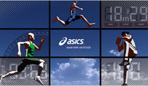

任性神户马拉松行程
介绍
神户马拉松是为了纪念二十年前的阪神大地震所设立，凭借细致的赛事组织、完善的专业服务，得到众多马拉松爱好者的好评，与东京马拉松、大阪马拉松并称为日本三大马拉松。神户马拉松全程85%都是在平坦的滨海大道上完成的，习习的海风让参赛者倍感舒适，再加上神户的美食和温泉，更能激励参赛者超水平发挥。和东京马拉松一样，为了确保选手的安全和赛事的质量，神户马拉松的赛事规模被严格控制在20000人左右，报名人数近年来都超过了10万人，中签率仅为20%。立刻报名尊享免抽签！
行程：4天3晚，11月13日出发，11月16日返回
参赛报价6299元/人（赠送免费WIFI）、观赛报价5499元/人
6岁以下儿童：2010年1月1日以后出生，身高在1.1米以下的儿童，不占用床位，按1000元/人收费，6岁以上儿童需按照成人标准收费，即观赛团5499元/人
行程亮点
 Step1：首先亲自确认自己的足底情况。专门教练给你分析
Step1：首先亲自确认自己的足底情况。专门教练给你分析
Step2：加热鞋垫内的液态金属，再完全贴合理想足底的形态，让其凝固，形成对足底强力的支撑
Step3：跟原来的鞋垫换。测量分析到完成整个过程大概10－15分钟
19：20出港（全程1个小时45分钟）
路线：神户Harbor Land出发－六甲山夜景－神户空港－淡路島夜景－明石大桥（黑色路线）
从船上可以欣赏到神户璀璨夺目的夜景
夜晚，这里浪漫迷人的情调，最适合与重要的人一起共享美酒佳肴，从海上欣赏神户璀璨夺目的夜景。
乘船周游可使您在享用美食的同时，尽情欣赏神户精彩迷人的景色。
美食是由当今最顶级的烹饪大师所精心调制的享誉海外的神户黑毛和牛牛排和新鲜海鲜的日式铁板烧。
另外晚宴时，则会有爵士乐的现场演奏。
铁板烧套餐内容：
前菜： 日本樱鯛鱼刺身和神户本地蔬菜
汤： 神户本地蔬菜的奶油汤
海鲜： 烤鰆鱼
铁板烧：国产神户和牛120g和五种季节蔬菜
主食：炒饭 沙拉
甜点：水果 咖啡或红茶
※因为安全问题6岁以下儿童不能参加铁板烧晚宴。
赛前热身练习活动在神户震灾复兴纪念公园“港之森公园”举行。
路线包括大赛出发点，我们提前一天能熟识赛事的路线，还能够体会美丽港口城市。
全程马拉松经验丰富的RUNSTA神户永赖教练还给你们讲体力能量分配办法、怎么能够跑步时防止受伤等很多科学窍门。
培训课程内容：
大赛路线说明
路线：集合点RUNSTA神户→港之森公园→神户市政府（大赛出发点）→神户港神户port塔→RUNSTA神户 （全程五公里）
1全程马拉松体力能量分配方法
2,准备伸展热身 介绍提高自己记录大赛前必须做的伸展动作
3,跑步
4,放松身体 介绍赛后尽快解除乳酸办法
ASICS SPORTS MUSEUM
ASICS企业博物馆。传达ASICS的企业历史和产品发展历史。还可以体验一流运动选手的运动性能，可以触摸一流运动员使用的产品。
为了提高自己的马拉松记录需要调整身体，最主要的是前一天吃的东西，确保你在马拉松赛前能量充足。特别安排日本营养学专家精心搭配的餐饮，享用日本新鲜食材做的健康能量美食。
在PARTY上专业人士介绍大赛攻略方法、跑步专业知识分享、抽奖活动等很多开心的活动。
您可以来自中国各地的跑步爱好者汇聚一堂互相交流。
健康能量搭配菜单内容
食物的热量要小。过多的热量摄取可导致体脂增多、运动能力下降等。饮食中蛋白质、脂肪、糖的比例应为1：1：7
碳水化合物：赛前2－3天开始多吃碳水化合物
你85%－95%的饮食应该是碳水化合物。上午赛前练习跑后吃碳水，这正是你的肌肉准备好储存糖原的时候。但是别吃太饱
晚餐要少些，但碳水的比例要很大，最好你比赛日醒来时应该感到饥饿而不是饱的。
我们会准备意大利面、通心粉、面包、日本乌冬面、土豆类等的主食，这些主食容易消化，不会妨碍第二天的大赛。
矿物质： 矿物质人体的主要作用是参与神经肌肉的传导。增强肌肉的灵敏度。 跑步时大量的出汗会流失很多体内的矿物质导致肌肉受伤。绿叶食物、坚果、海产品是矿物质的最佳来源，水也是来源之一，要多喝水。
我们会准备新鲜沙拉、兵库县淡路岛特产海带做的海带汤、紫菜汤等。
维生素：由于马拉松运动员新陈代谢旺盛，维生素C消耗增加，维生素的缺乏对运动能力有损害所以在赛前应多吃含维生素C丰富的水果和蔬菜。
我们会准备新鲜水果和各种果汁。豆类食品。
蛋白质： 多吃富含蛋白质和铁的食物以及有利于增强耐力的食物，但脂肪暂时不要摄入过多。铁是体内的氧气有效率的变换能量。
我们蛋白质和铁的补充为您们准备日本新鲜鱼和鸡肉、豆腐之类的料理。
9:45东横INN酒店出发 － 10:00 ORIENTAL HOTEL出发
10:00-10:20 花时钟
10:30-11:15 神户港美利坚公园、神户港震灾纪念公园
11:30-11:50 湊川神社
12:00-13:00 午餐（一日游不含午餐费用）
13:30-14:45 异人馆（一日游费用不含异人馆参观票）
异人馆票价（参考）：
风见鸡馆 500日币
萌黄馆 300日币
风见鸡馆和萌黄馆 通票 600日币
莱茵馆 免费
鱼鳞之家和鱼鳞之家美术馆 1000日币
旅行贴士：
神户11月分平均温度是最低气温10度、最高气温17度。 这个行程15点结束不回酒店直接购物和晚餐，晚上可能有点冷，所以建议带外套出门。
异人馆需要上下坡的路走，所以建议穿运动鞋参加一日游。
有马温泉介绍：
根据作为有马温泉的守护神而名气很大的汤泉神社的起源记载，最早发现泉眼的是远古时代的大已贵命和少彦名命二柱神仙。据传此二神造访有马时，见到三只受伤的乌鸦在一水洼洗浴，数日后其伤竟不治自愈。此水洼就是温泉。
神户牛肉怀石料理的介绍：
神户牛肉（WAGYU Beef，牛品种叫黑毛和牛）是世界上最有名气的牛肉。作为日本特产，神户牛肉常常出现在招待国宾的宴会上。那种香而不腻、入口即化的感觉，能让人不忍停箸。它曾被日本天皇禁食，亦曾卖出过“天价”。也是日本料理菜谱顶级食材。此前神户牛肉价格6000日元一公斤，相当于320元人民币。最好的藤级神户牛肉价格41500日元一公斤，相当于2606元人民币。不过，一只神户牛身上，只有6公斤A5级WAGYU Beef。
怀石料理的名称由来，其实是来自于中国的老子所著《道德经》第70章中“是以圣人被褐怀玉”一句。 被褐怀玉，被褐者，薄外；怀玉者，厚内。表面粗糙破落，而内心则怀抱美玉。忽略外在而强调内在的价值，这种理念与日本茶道“侘び寂び”的精神完全吻合，不添加过度的调味和装饰，而是用细致的选材和简单的料理法“割主烹从”去突出食材本身的美味。赛后PARTY是入口即化的神户牛肉和怀石料理的顶级套餐，共进日本美食赛后的疲劳身体会马上恢复过来。
Rinku Premium Outlets位于大阪和京都的大门—关西国际机场对岸，是日本西部规模最大的名牌特价商品购物中心之一，从机场乘专用公共汽车20分钟左右便可到达。由于邻近关西国际机场，已成为国外游客的最佳购物场所。
两层高的购物中心，里面有Armani、 Bally、 Brooks Brothers、 Coach、 D&G、Hugo Boss、Salvatore Ferragamo、Tag Heuer、 Zagna等等超过210家国外名牌专卖店，名牌时装、休闲服装、体育用品、儿童服装、玩具、内衣、杂货、包、鞋、礼品、服饰用品应有尽有。整个购物中心以美国港口城市查尔斯顿为主题，由多栋纯白建筑组成，在这休闲的街道您可以尽情享受购物乐趣。
第一天 2015年11月13日 比赛日前两天
中国－神户
餐饮： 早餐—敬请自理 午餐—敬请自理 晚餐—神户和牛海鲜铁板烧游轮晚餐
酒店：入住 Toyoko Inn或同等经济型酒店
行程：专车从大阪关西国际机场迎接，送您前往下榻酒店。
15：30 领取专门为您订制的“福袋”。
16：30 “Harbor Land KOBE”的体育用品专门店购物，亦可订制跑步鞋垫享五折优惠。
19：00 神户和牛海鲜铁板烧游轮晚餐
21：30 专车返回酒店
【旅行贴士】
神户购物商场“Harbor Land KOBE”是时尚的大型shopping mall.
第二天 2015年11月14日 比赛日前一天
赛前热身－神户马拉松EXPO -ASICS体育博物馆-能量party
餐饮：早餐—酒店内享用 午餐—敬请自理 晚餐—赛前PARTY
酒店：Toyoko Inn或同等经济型酒店
行程：
9：30 步行前往热身训练场地。
10：00 日本RANSTA神户著名教练带大家去热身跑步和赛前身体调整指导，热身结束后可以淋浴更衣
11：30 专车前往ASICS体育博物馆参观。
13：00 午餐
14：00 神户EXPO展览会中心领取马拉松物资，参观展览会。
15：00 自由活动，专车前往神户最大的购物中心地区，包括大型电器城YAMADA，东急手创店Tokyohands，药妆店（松本清），极安天堂，百货商店，无印良品等
19：00 赛前碳水化合物能量party
第三天 2015年11月15日 比赛日
马拉松大赛－有马温泉
餐饮：早餐-酒店早餐，赛前能量早餐包 午餐—赛后简餐 晚餐—怀石料理
酒店：有马温泉GRAND HOTEL
行程：
7：30 酒店退房，行李装车。集合一起前往出发点，请携带跑步后替换的衣物和鞋子。
9：00 出发
比赛结束后分批专车前往有马温泉酒店。
下午前往有马温泉泡温泉入住后可以自行休息，泡汤。
19：30 神户牛肉怀石料理。
第四天 2015年11月16日 赛后第一日
神户－温馨的家
餐饮：早餐—酒店内享用 午餐—敬请自理 晚餐—敬请自理
行程：
9：00出发到关西机场旁边的RINKU PREMIUM OUTLETS购物 （如果不想参加购物，可注明，可以自由活动中午11:30出发前往机场，下午1点左右到达机场）
13：30分集合专车前往关西机场，搭乘国际航班返回中国。
【旅行贴士】
关西机场有日本各个地方的美食街，回国之前再次品尝一下日本菜。
费用包含
经济连锁酒店两晚含早餐
有马温泉一晚住宿及神户牛肉怀石料理
神户和牛海鲜铁板烧游轮晚宴
神户马拉松报名费用及参赛包（全程或10公里/观赛团不包括此项目）
赛前热身训练
赛前碳水化合物能量party
能量早餐包
全程接送服务（机场、赛场、展览会、有马温泉）
全程陪同
费用不含
往返机票
酒店升级
儿童加床
签证及保险费
境外特殊服务小费及导游推荐项目费用，行李搬运及保险费
酒店内洗衣，理发，床头小费，收费电视、电话、传真、饮料等一切个人费用
各种不可抗因素引起的额外费用（如自然灾害、罢工等）
以上服务内容未提及的其他费用